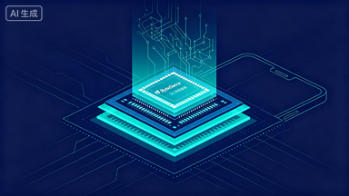

一笔让英伟达紧张的订单
2026 年 5 月 26 日，Bloomberg 率先报道：高通（Qualcomm）与字节跳动签署了一份规模达"数百万颗"的 ASIC 芯片供应协议。消息一出，高通股价盘中飙升 11.6%，创下历史新高 258 美元。
这不是一笔普通的芯片采购。
它的特殊之处在于三个层面：第一，买的不是 GPU，而是专用推理芯片（ASIC）；第二，这笔交易被精心设计在美国出口管制的算力阈值之内；第三，高通同时还将帮字节把一颗自研芯片从设计图纸推进到量产。
换句话说，字节不只是在"买芯片"——它在构建一条完整的 AI 算力供应链。
而这条供应链的终点，不是数据中心里的服务器机架，而是你口袋里的手机。
为什么 GPU 不够用了：Agent 时代的算力经济学
要理解字节为什么要走这条路，我们需要先搞清楚一个根本性的变化：AI 的主要算力消耗正在从训练转向推理。
打个比方。训练大模型像是建一座图书馆——投入巨大，但建一次就行。推理则像是每天有一亿人来图书馆借书、查资料、让管理员帮忙写报告。图书馆建好了，但管理员的工资才是持续烧钱的大头。
字节的豆包模型在 2026 年 3 月的日处理量达到了 120 万亿 token（据火山引擎公开数据）。这个数字在三个月内翻了一倍，相比 2024 年 5 月公开发布时增长了一千倍。
更关键的是，豆包不只是在"回答问题"。它在运行 Agent——自主规划、调用工具、检查结果、重新发起子任务。每一次 Agent 动作都是一连串推理请求。一个用户的一次对话，可能触发 5-20 次模型调用。
这就是为什么 GPU 不够用了。
GPU 是通用并行计算的王者，但它的设计初衷是矩阵运算——适合训练，也适合单次推理。当推理变成高频、低延迟、大并发的 Agent 工作负载时，GPU 的性价比急剧下降。你需要的不是更强的单次计算能力，而是更低的每次调用边际成本。
这正是 ASIC 的用武之地。
第一层：高通 ASIC——"合规版"推理芯片
ASIC（Application-Specific Integrated Circuit，专用集成电路）和 GPU 的区别，类似于瑞士军刀和手术刀的区别。GPU 什么都能干，但每件事都不是最优解；ASIC 只干一件事，但把这件事做到极致。
字节选择高通作为 ASIC 供应商，背后有三层逻辑：
第一，技术路径。高通在 2025 年底完成了对英国 Alphawave Semi 的 24 亿美元收购，获得了高速互连 IP 和数据中心 ASIC 设计能力。这笔收购本质上是高通从手机芯片公司转型为数据中心芯片公司的关键一步。字节是这个新业务的第一个公开大客户。
第二，合规设计。据 The Next Web 报道，这批 ASIC 的计算性能被"精心设计在美国商务部对华芯片出口的算力阈值之内"。字节自研的芯片同样"被工程化为落在相同阈值之内"。这不是巧合，而是整个交易架构的核心设计原则。
第三，双重角色。高通在这笔交易中不只是芯片供应商，还是字节自研芯片的代工合作伙伴——帮助字节把一颗已完成设计的芯片推进到量产阶段。这意味着字节同时获得了"现货供应"和"自研量产能力"两条路径。
第二层：自研 CPU——Arm 与 RISC-V 的双轨赌注
如果说 ASIC 解决的是"推理计算"本身的问题，那 CPU 解决的是推理计算周围的一切问题。
这是一个容易被忽略的事实：在 Agent 推理的完整链路中，GPU/ASIC 只负责"思考"那一步。而调度任务、管理会话、处理 API 调用、执行工具返回、维护上下文窗口——这些全部跑在 CPU 上。
用餐厅类比：GPU 是厨师，负责炒菜；CPU 是前厅经理，负责接单、排队、传菜、结账。当餐厅从"一天接 100 单"变成"一天接 1 亿单"时，瓶颈往往不在厨房，而在前厅。
字节目前面临的 CPU 困境非常具体：
- Intel 通知中国客户，服务器 CPU 交货周期长达6 个月
- AMD 和 Intel 的报价每季度上涨 10%-35%（据路透社 2026 年 5 月报道）
- 全球 CPU 市场处于"紧缺"状态，AMD CEO 公开表示供应约束将持续
字节的应对方案是同时推进两条架构：
| 架构 | 优势 | 风险 | 适用场景 |
|---|---|---|---|
| Arm（SoftBank 持有） | 生态成熟，AWS Graviton 已验证数据中心可行性 | 需要向 Arm 支付授权费，受地缘政治影响 | 短期量产首选 |
| RISC-V（开源 ISA） | 零授权费，完全自主可控，中国政策支持 | 生态不成熟，软件适配工作量大 | 长期战略方向 |
双轨并行是典型的"大公司对冲策略"——在 Arm 上快速出成果，在 RISC-V 上押注长期自主权。Google、Amazon、Microsoft 都走过类似的路（自研 Arm 服务器芯片），但同时押注 RISC-V 的，字节是中国互联网公司中动作最明确的一个。
第三层：豆包手机 OS——Agent 的最后一公里
芯片是基础设施，但基础设施的价值最终要通过产品体现。字节的产品终点不是云服务——而是手机。
2026 年初，字节与中兴旗下的努比亚合作推出了一款搭载"豆包手机助手"的原型机，售价 3499 元。首批上市当天售罄，闲鱼加价 700-1500 元转卖。
豆包手机助手不是传统意义上的语音助手。它的架构定位是一个Agentic OS 层——坐在 Android 之上，作为一个智能控制层，能够感知屏幕内容并自主操作第三方 App。
关键能力演示：
- 同时打开淘宝、京东、美团，自主比价，下单最便宜的选项
- 跨 App 执行多步骤任务，无需用户逐步确认
- 通过 UI 层自动化（而非 API 集成）操作任意 App
这里有一个关键的架构决策值得注意：豆包选择了UI 层自动化而非 API 集成。这意味着它不需要每个 App 的配合就能工作——它像一个"看着屏幕操作手机的人"，而不是一个"接入了所有 App 后台的系统"。
这个选择的好处是覆盖面广（任何 App 都能操作），代价是稳定性和速度不如原生 API。但对字节来说，这是唯一可行的路径——没有哪个电商平台会主动开放 API 让竞争对手的 AI 来比价。
全栈拼图：为什么这三层必须一起做
把三层放在一起看，字节的逻辑链条是这样的：
graph TD
A[豆包 Agent 手机] -->|"每次操作触发 5-20 次推理"| B[推理请求洪流]
B -->|"需要极低边际成本"| C[ASIC 推理芯片
高通定制]
C -->|"调度/会话/工具调用"| D[自研 CPU
Arm + RISC-V]
D -->|"降低每 token 成本"| E[火山引擎 Agent 套餐
对外商业化]
E -->|"更多开发者接入"| A
这是一个正反馈飞轮：
- 设备层（豆包手机）创造海量推理需求
- 芯片层（ASIC + 自研 CPU）把每次推理的边际成本压到最低
- 平台层（火山引擎）把低成本算力打包成 Agent 套餐对外售卖
- 更多开发者和用户接入，进一步推高推理量，反过来摊薄芯片研发的固定成本
这个飞轮的核心假设是：AI Agent 的使用量会持续指数增长。如果这个假设成立，那么谁能把推理成本压得最低，谁就能在 Agent 时代占据最有利的位置。
字节 2026 年的 AI 基础设施预算是 2000 亿人民币（约 294 亿美元），比年初计划的 1600 亿上调了 25%。其中仅 AI 芯片采购就预留了 850 亿。这不是一个"试试看"的投入规模——这是 all-in。
横向对比：字节 vs 全球科技巨头的垂直整合程度
| 公司 | 自研推理芯片 | 自研 CPU | Agent 设备入口 | 垂直整合度 |
|---|---|---|---|---|
| TPU（已量产 5 代） | Axion（Arm） | Pixel + Gemini Spark | ⭐⭐⭐⭐⭐ | |
| Amazon | Inferentia / Trainium | Graviton（Arm） | Alexa+ / Echo | ⭐⭐⭐⭐ |
| Apple | Neural Engine（端侧） | M 系列（Arm） | iPhone + Apple Intelligence | ⭐⭐⭐⭐⭐ |
| 字节跳动 | 高通 ASIC（采购）+ 自研（早期） | Arm + RISC-V（早期） | 豆包手机（原型机） | ⭐⭐⭐ |
| 百度 | 昆仑芯（已量产） | 无 | 小度 / 文心一言 App | ⭐⭐⭐ |
| 华为 | 昇腾（已量产） | 鲲鹏（Arm） | Mate 系列 + 盘古 | ⭐⭐⭐⭐ |
从表中可以看出，字节目前的垂直整合度还远不如 Google 或 Apple——它的芯片项目都处于早期阶段。但它的意图是最完整的：从推理芯片到通用 CPU 到设备 OS，每一层都在同时推进。
值得注意的是，在中国公司中，华为是唯一一个已经走通"芯片→设备"全链路的玩家。但华为的路径是被制裁逼出来的被动选择，字节则是在有选择的情况下主动选择了垂直整合——这说明它对 Agent 时代的算力需求有一个非常激进的预判。
真实挑战：这条路上的三个硬伤
硬伤一：芯片经验不足。
字节的硬件团队成立于 2022 年，满打满算 4 年经验。对比 Apple（20+ 年）、Google（15+ 年）、Amazon（10+ 年）的芯片设计积累，字节在工程成熟度上有巨大差距。自研芯片从设计到量产通常需要 3-5 年，期间的试错成本极高。
硬伤二：代工厂问题。
字节的芯片最终需要找代工厂生产。台积电（TSMC）是全球最先进的选择，但受地缘政治影响，中国公司获取先进制程的难度越来越大。中芯国际（SMIC）是国内替代方案，但在良率、密度和单位成本上与台积电仍有显著差距。这个问题目前没有公开的解决方案。
硬伤三：出口管制的不确定性。
当前的高通 ASIC 交易被设计在合规阈值之内，但美国商务部的管制规则每年都在收紧。2024 年的合规芯片，到 2025 年可能就不合规了。字节的整个算力规划建立在"当前规则持续有效"的假设上——而这个假设本身就是最大的风险。
正如 Jensen Huang（英伟达 CEO）在最近的财报电话会上所说："中国 AI 实验室转向替代芯片，是一个结构性的变化。"他没有说这对英伟达是好事还是坏事——但他显然认为这个趋势不可逆。
我的判断：字节在赌什么
拆解完整个布局，我认为字节的核心赌注可以归结为一句话：
AI Agent 的推理量会在未来 3 年增长 100 倍以上，届时谁控制了推理成本的底层，谁就控制了 AI 应用的利润分配。
这个判断是否正确？我认为方向大概率是对的，但时间表可能过于激进。理由如下：
支撑这个判断的证据：
- 豆包的 token 处理量在 3 个月内翻倍，且 Agent 类应用（Coze 平台）是增长最快的品类
- 全球范围内，OpenAI、Google、Anthropic 都在把产品从"聊天"转向"Agent"（Codex 移动版就是典型案例）
- 火山引擎在 5 月 11 日推出了行业首个"Agent 套餐"，说明 Agent 推理已经有了独立的商业化需求
质疑这个判断的理由：
- Agent 的可靠性问题尚未解决——如果 Agent 经常出错，用户使用频率不会指数增长
- 自研芯片 3-5 年才能量产，届时市场格局可能已经完全不同
- 2000 亿的基建投入需要巨大的收入增长来回收，而字节的广告业务增速已经放缓
给读者的判断框架：
如果你在评估一家公司的 AI 基础设施战略是否靠谱，可以问三个问题：
- 需求侧：它的 AI 产品是否已经产生了足够大的推理量来证明自研芯片的经济性？（字节：是，120 万亿 token/天）
- 供给侧：它是否有可靠的芯片量产路径？（字节：部分有，高通代工；自研部分未知）
- 时间窗口：从投入到产出的周期内，市场假设是否会发生根本变化？（字节：最大风险点）
三个问题都答"是"，才值得 all-in。字节目前的答案是"是、半是、不确定"——这解释了为什么它同时走多条路径（买高通 + 自研 + 双架构），而不是把所有赌注押在一条线上。
这不是一个"天才战略"的故事，而是一个"在巨大不确定性下做对冲"的故事。能不能跑通，取决于 Agent 时代是否真的如期到来——以及字节能否在芯片经验不足的情况下，用钱和速度弥补技术积累的差距。
延伸阅读：
- DeerFlow 2.0 架构全拆解——字节的多智能体系统如何消耗这些算力
- DeepSeek V4 与华为昇腾——中国 AI 算力独立的另一条路径
- 部署一个 AI Agent 到底要花多少钱——理解推理成本的完整拆解